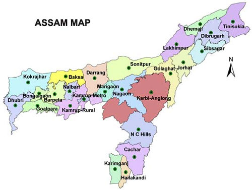

LET'S HAVE A LOOK AT THE TOUR MAP
WHERE TO VISIT , WHAT TO SEE?
SOME HOT PICKS(#HAVE_TO_VISIT)
- KAZIRANGA NATIONAL PARK - FAMOUS FOR THE ONE HORNED RHINO POPULATION OF THE WORLD
- MAJULI - GEAOGRAPHICALLY A MAJULI IS A RIVER BOUND ISLAND ,FORMED BY THE FLOW OF THE RIVER WATERS.
- GUWAHATI - RELAXING ENJOYABLE HOLIDAY DESTINATION
- HAJO - ANCIENT PILGRIMAGE CENTER FOR ALL THE THREE RELIGIONS - HINDU, MUSLIM AND BUDDHISTS
- SIVASAGAR - HISTORIC FORTS OF THE AHOM DYNASTY AND HISTORIC CULTURE
- SILCHAR - SITUATED ON THE BARAK RIVER ,KNOWN FOR THE SCENIC BEAUTY
- JORHAT - CULTURE,MOSQUES,TOMBS,GARDENS AND TEA PLANTATIONS
- MANAS NATIONAL PARK - UNESCO WORLD HERITAGE SITE UNDER PROJECT SAVE TIGER
- NAMERI NATIOANL PARK - FAMOUS FOR ITS ELEPHANTS ,TIGERS AND LEOPARDS MAINLY
- LILABARI - BREATHTAKING DIRANG VALLEY AND SELA PASS
- ORANG NATIONAL PARK - OLDEST GAME RESERVES OF THE STATE
- DIPHU - PICTURESQUE TOWN
- BONGAIGAON - GREEN MAT COVERED MOUNTAINS
- DARANG - SPELL BINDING NATURAL BEAUTY AND BIRD VIEWING
- NAGAON - RICE BOWL OF ASSAM, RICH IN PADDY
- MATONG ASSAM - LAND OF BLACK MAGIC.PEOPLE SAY THAT THERE IS AN EERIE SILENCE COMPLETELY OPPOSING THE CHAOTIC HISTORY OF THE PLACE
- BOGMOTI - INDO-BHUTAN BORDER AND A SERENE GATEWAY FOR TRAVELLERS
OTHER_ATTRACTIONS
- GOALPARA - SCENIC TOWN ON THE BANKS OF RIER BRAHMAPUTRA
- DIBRUGARH - INDUSTRIAL HUB OF NORTH -EAST INDIA
- TINSUKIA - NATURAL BEAUTY AND VILLAGES
- DISPUR - CAPITAL CITY PACKED WITH PANORAMIC VIEWS AND TRIBAL CULTURE
- DIBRU SAIKHOWA NATIONAL PARK - ONE OF THE 19 BIODIVERSITY HOTSPOTS
- SUALKUCHI - SMALL SLEEPY VILLAGE
- KARIMGUNJ - LUSH GREEN SURROUNDINGS
- BARPETA - LITERAL MEANING BIG POND
- HAILAKANDI - NESTED IN THE HEART OF BARAK VALLEY, IT IS A PERFECT PLACE FOR PEOPLE LOOKING FOR PEACE AND TRANQUILITY
- NALBARI - PERFECT GATEWAY TO EXPLORE THE WILDERNESS OF NATURE
- POBITORA WILDLIFE SANCTUARY
- UMANANDA ISLAND -
- SADIYA - SITUATED IN THE HIMALAYAN FOOTHILLS THIS PLACE IS MAINLY A GRASSY PLAIN